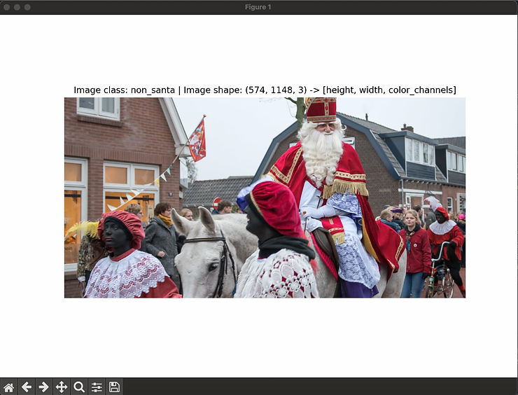

Jingle or No Jingle. A Hilariously Serious Dive into PyTorch Image Classification for Santa Claus Detection. 🎄
Season's Greetings, data scientists and tech enthusiasts! In the spirit of ho-ho-hilarity and cutting-edge Christmas cheer, I present to you a Christmas-themed trip into the world of PyTorch image classification. Armed with the power of pixels and powered by the magic of MacOS, this jolly project endeavors to answer the age-old question: Is Santa Claus photo bombing your holiday snapshots? Join me on this merry adventure and get ready for a sleigh ride through code, Christmas spirit, and a dash of high-tech merriment!
Before we dive into the jingle of PyTorch and the festive magic of image classification, let's address the elephant in the room – a.k.a. the neural network. If you're already familiar with the ins and outs of neural networks, fantastic! If not, take a brief pause and explore the basics in this introductory post. Fear not! I won't be unwrapping the intricacies of neural network structures here. Instead, we're keeping it as simple as Santa's route to your chimney, because after all, his visit is just around the corner!
Introduction and Data Preparation
To kick things off, let's import the necessary packages to set the stage for our upcoming tasks.
from pathlib import Path
from timeit import default_timer as timer
import random
from PIL import Image
import numpy as np
import matplotlib.pyplot as plt
from tqdm.auto import tqdm
import torch
from torch import nn
from torch.utils.data import DataLoader
from torchvision import datasets, transforms
from santa_functions import (walk_through_dir,
accuracy_fn,
print_train_time,
plot_transformed_images)
from CNN_Model import SantaCNN
All the libraries, except for the final two, consist of built-in modules housing valuable functions and classes essential for our Santa-spotting mission. You can locate the last two in this repository, which also hosts the utilized data. Additionally, I've included two Python scripts allowing you to effortlessly rename all files within a folder. I found this handy for organizing the myriad photos collected, ensuring seamless tracking when needed.
After securing the aforementioned files, it's prudent to verify that everything is in order. Consequently, I've provided some lines of code for a quick cross-check. To initiate this, we establish the path to the directory containing our data.
# Directory containing data
data_path = Path("/your/path/to/Is that Santa? 🎅/project")
image_path = data_path / "train"
walk_through_dir(image_path)
# Setup train and testing directory
train_dir = "/path/to/data/train"
test_dir = "/path/to/data/test"
walk_through_dir(train_dir)
walk_through_dir(test_dir)
Ensure that within the designated path (e.g., test_dir), a specific number of images is present—308 depicting Santa and an equivalent number portraying non-Santa scenarios. Following this, our next task is to select a "random" image (seed predetermined) and scrutinize its dimensional particulars.
random.seed(42)
image_path_list = list(image_path.glob("*/*.jpg"))
random_image_path = random.choice(image_path_list)
image_class = random_image_path.parent.stem
img = Image.open(random_image_path)
print(f"Random image path: {random_image_path}")
print(f"Image class: {image_class}")
print(f"Image height: {img.height}")
print(f"Image width: {img.width}")
Where we receive the details as an outcome:
Random image path: /path/to/selected/image/265_NotSanta.jpg
Image class: non_santa
Image height: 574
Image width: 1148
But let's spot the not so Santa to be witness of this madness:
img_as_array = np.asarray(img)
plt.figure(figsize=(10, 7))
plt.imshow(img_as_array)
plt.title(f"Image class: {image_class} | Image shape: {img_as_array.shape} -> [height, width, color_channels]")
plt.axis(False)

Upon closer inspection, you'll observe that the included images exhibit varying dimensions. This variability demands attention to enhance our model's efficacy. Consequently, we'll implement specific transformations. Initially, we'll standardize all images to a uniform size of 64 by 64. Following this, we'll introduce random flips with a 50% probability for certain images. This strategic move aims to prevent the model from fixating on the horizontal direction as a defining feature of Santa, ensuring a more robust learning process. Lastly, to seamlessly integrate these images into our model, we'll convert them into tensors.
data_transform = transforms.Compose([
transforms.Resize(size=(64, 64)),
transforms.RandomHorizontalFlip(p=0.5),
transforms.ToTensor()
])
plot_transformed_images(image_path_list,
transform=data_transform,
n=3)
train_data = datasets.ImageFolder(root=train_dir,
transform=data_transform,
target_transform=None)
test_data = datasets.ImageFolder(root=test_dir,
transform=data_transform)
print(f"Train data:\n{train_data}\nTest data:\n{test_data}")
In the upcoming lines, we'll establish the image classes present in the training and testing folders. As you might anticipate, these classes are none other than Santa and Not Santa!
class_names = train_data.classes
class_names
class_dict = train_data.class_to_idx
class_dict
Finally, in order to use our data iteratively in batches and not all at once, we are going to use the DataLoader format, build-in torch.utils.data as imported from above.
BATCH_SIZE = 32
train_dataloader = DataLoader(train_data,
batch_size=BATCH_SIZE,
shuffle=True
)
test_dataloader = DataLoader(test_data,
batch_size=BATCH_SIZE,
shuffle=False
)
In order to take a look at the objects we just created and investigate their dimensions, we can run the following command:
train_features_batch, train_labels_batch = next(iter(train_dataloader))
train_features_batch.shape, train_labels_batch.shape
and we are going to see the exact shape of train and features and labels that we will import to our model:
(torch.Size([32, 3, 64, 64]), torch.Size([32]))
Model Architecture
I understand; you might be contemplating something right now. While I initially mentioned avoiding an in-depth exploration of the model's intricacies, I'd like to clarify that I won't delve into technical specifics. Instead, let's take a moment to introduce the architecture that underlies the results we'll unveil shortly.
Let's meet the SantaCNN, a neural network ready to crack this festive code! This jolly model, is inspired by the TinyVGG architecture (because even Santa needs a tech upgrade), is on a mission to distinguish between Santa and mere holiday enthusiasts.
SantaCNN is a two-block ensemble, each packed with convolutional charm. The first block, a confection of convolutions (Conv2d), ReLUs, and a splash of MaxPooling magic, sets the stage for unraveling the festive mysteries. Block two follows suit, further refining the holiday essence with additional layers of convolutional wizardry.
Now, here's where the magic happens: the classifier swoops in like Santa on Christmas Eve, flaunting a Flattening feat and a Linear layer to make sense of the pixelated clues. With an impressive 8192 in_features dance, our neural maestro is ready to deliver the verdict: Naughty or Nice (Santa edition).
For more details take a look at the CNN_model.py, in the aforementioned repo, or ask me!
Let's find Santa
First things first – let's don our Santa goggles! In the upcoming Python script, we're not only sketching out our initial model but also summoning the powers of a loss function and an optimizer. These dynamic duos will be our guiding elves, assisting us in fine-tuning those parameters batch by batch!
model_init = SantaCNN(input_shape=3,
hidden_units=32,
output_shape=len(class_names))
loss_fn = nn.CrossEntropyLoss()
optimizer = torch.optim.Adam(params=model_init.parameters(),
lr=0.001)
Finally, we are going to establish our training and testing loop for preselected number of epochs and take a look at the results.
torch.manual_seed(42)
train_time_start_on_cpu = timer()
epochs = 10
for epoch in tqdm(range(epochs)):
print(f"Epoch: {epoch}\n-------")
train_loss = 0
for batch, (X, y) in enumerate(train_dataloader):
model_init.train()
y_pred = model_init(X)
loss = loss_fn(y_pred, y)
train_loss += loss
optimizer.zero_grad()
loss.backward()
optimizer.step()
if batch % 400 == 0:
print(f"Looked at {batch * len(X)}/{len(train_dataloader.dataset)} samples")
train_loss /= len(train_dataloader)
test_loss, test_acc = 0, 0
model_init.eval()
with torch.inference_mode():
for X, y in test_dataloader:
test_pred = model_init(X)
test_loss += loss_fn(test_pred, y)
test_acc += accuracy_fn(y_true=y, y_pred=test_pred.argmax(dim=1))
test_loss /= len(test_dataloader)
test_acc /= len(test_dataloader)
print(f"\nTrain loss: {train_loss:.5f} | Test loss: {test_loss:.5f}, Test acc: {test_acc:.2f}%\n")
train_time_end_on_cpu = timer()
total_train_time_model_0 = print_train_time(start=train_time_start_on_cpu,
end=train_time_end_on_cpu,
device=str(next(model_init.parameters()).device))
total_train_time_model_0
And you are wondering right now, what are the results, right? Well the last iteration return the following results:
Train loss: 0.00240 | Test loss: 0.33573, Test acc: 91.88%
Train time on cpu: 280.503 seconds
Pretty good, huh? Well, off you go – import those selfies and delve deeper into the mystical realm of Santa Claus spirit. Wishing you better luck than I had; may you uncover his elusive presence hidden somewhere in the background! 🎅🔍
Well, I hope you enjoyed this, and the rest of this year's posts as much as I did and learned something!
Be safe, code safer!
Subscribe to Kavour
Get the latest posts delivered right to your inbox